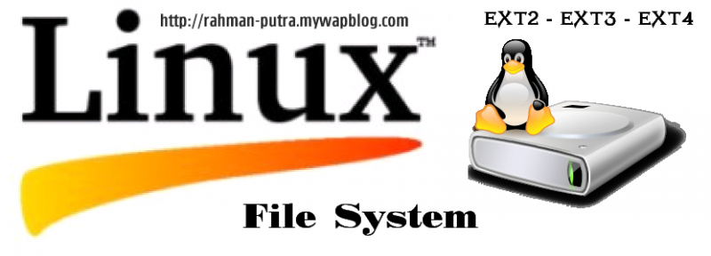

L'extended file system ou ext, est le premier système de fichiers créé en avril 1992 spécifiquement pour le système d'exploitation Linux, il est intégré dès la version 0.96c du noyau Linux1. Il a été conçu par Rémy Card pour surmonter certaines limitations du système de fichiers Minix. Il a plus tard été remplacé par ext2 et Xiafs, tous deux en compétition, laquelle a été remportée par ext2 grâce à sa viabilité sur le long terme
D'autres systèmes de fichiers étendus - ext2, le second système de fichiers étendus - ext3, le troisième système de fichiers étendu.- ext4, le quatrième système de fichiers étendu.
ext4 est le successeur du système de fichiers ext3, principalement destiné aux systèmes basés sur GNU/Linux.
Il garde une compatibilité avec son prédécesseur et est considéré par ses propres concepteurs comme une étape intermédiaire devant mener à un vrai système de fichiers de nouvelle génération tel que Btrfs1. Toutefois, ext4 est une étape utile et non une simple solution temporaire.
Les limitations - Taille maximale de fichiers : 16 To - Nombre maximal de fichiers : 4 milliards- Taille maximale du nom de fichiers : 255 octets

Hard Drive Mechanic, site sur le fonctionnement des disques durs - Tous droits réservés. Copyright Mentions LégalesContactez Site Créé par Sébastien BUNEL